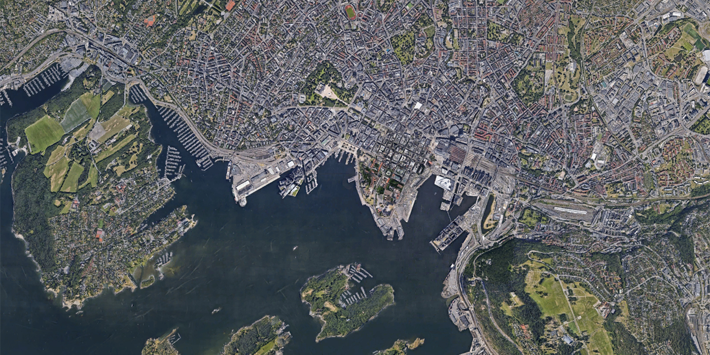
I float
in space,
watching the Earth from 11,000 km out, the God’s-eye view. Greenland, Iceland, Denmark, Norway, Sweden, Finland… pinpricks of light on the Google projection. They are all linked in my mind. Ever since I was a child, I’ve always wanted to visit Northern Europe. There is something about the landscape that inspires great wonder in me. Perhaps it was that childhood perception of Greenland as this enormous, mythical landmass, even bigger than Australia, almost completely filled with ice and snow. Now, I have the chance. My first stop is Norway. I patch into the console and spiral down into the ground, into Oslo’s Bjørvika district and the Barcode Project, the controversial high-rise redevelopment in a former docklands area.
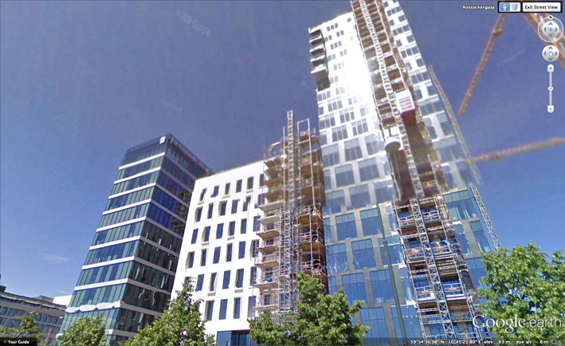Barcode Project. Google Earth, Oslo, Norway, 2009.
I have a Norwegian friend, and she tells me the Barcode Project represents a city in a permanent state of near future, convenience hardwired into its new building projects at the expense of conservation; a new-rich decadence. The Barcode is a Ballardian development, she suggests, reminiscent of the worlds of J.G. Ballard, especially his novels Cocaine Nights and Super-Cannes, which document urban decadence hidden behind sleek architecture, powered by a deviant human psychology mutated by technological systems. Soon I will be in Oslo in real time, in the real world, to give a talk on Ballard, surveillance culture and cinema. Then, I will be able to test my contact’s hypothesis for myself, but for now all I have to see with are my Nine Eyes.
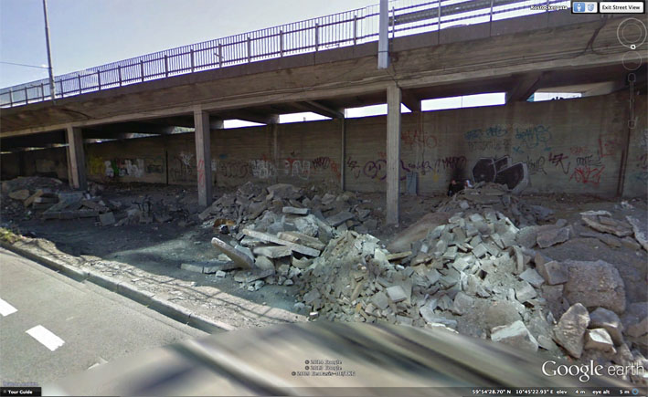
Underpass, Rostockergata, opposite the Barcode construction zone. Google Earth, Oslo, Norway, 2009.
In the construction zone, on the green-and-blue facade of the PricewaterhouseCoopers building, I see fake perspective tricks worked into the building’s skin. This type of game is always a con, a way for architects to ignore the lived experience of a city by focusing attention on the bling of a building. Pure illusion. It does not reflect reality, only itself, like two mirrors distorting each other into infinity. In Melbourne, where I live, there is a similar development, the Docklands Precinct (or “Shocklands”, as I prefer it). Like the Barcode Project, it’s a redeveloped industrial waterfront area in the city centre. Like Barcode, its buildings are designed so close to each other they create narrow passages between them. Urbanists call such spaces SLOAP: Spaces Left Over After Planning. The Shocklands are hostile to urban life and human scale. The SLOAP there forms hyperactive wind tunnels that repel all street-level activity through constant wind motion and noise. Instead of designing sites for public interaction from the start, the SLOAP is what we get, and the architects can always claim: “There is your public space.”
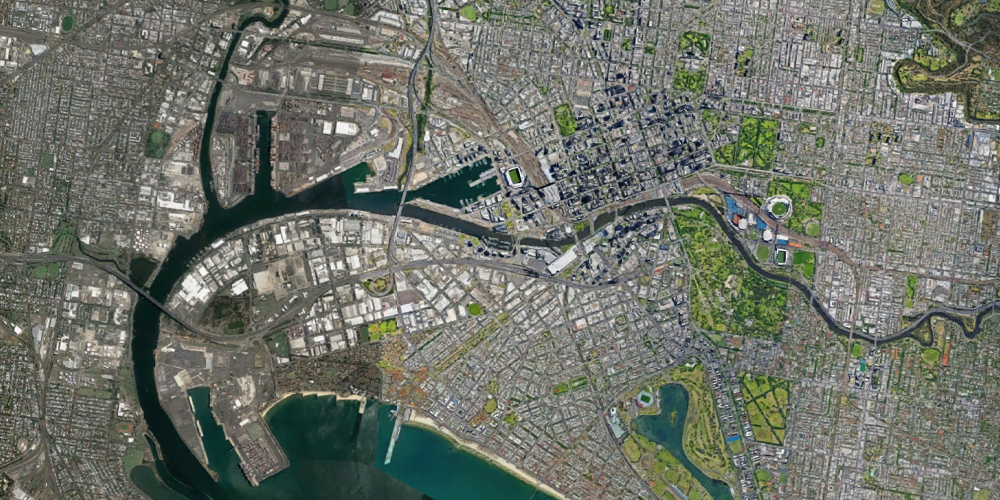
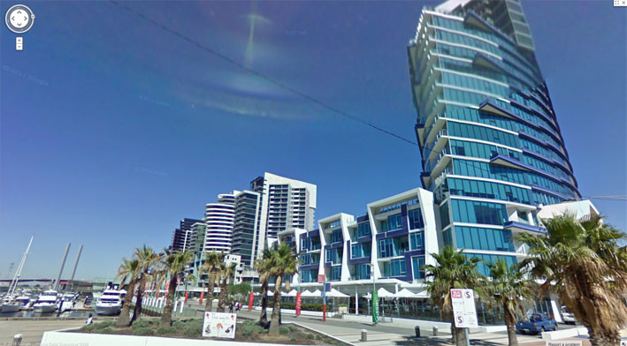
Melbourne Shocklands. Google Earth, 2010.
Melbourne, where I live, there is a similar development, the Docklands Precinct (or “Shocklands”, as I prefer it). Like the Barcode Project, it’s a redeveloped industrial waterfront area in the city centre. Like Barcode, its buildings are designed so close to each other they create narrow passages between them. Urbanists call such spaces SLOAP: Spaces Left Over After Planning. The Shocklands are hostile to urban life and human scale. The SLOAP there forms hyperactive wind tunnels that repel all street-level activity through constant wind motion and noise. Instead of designing sites for public interaction from the start, the SLOAP is what we get, and the architects can always claim: “There is your public space.”
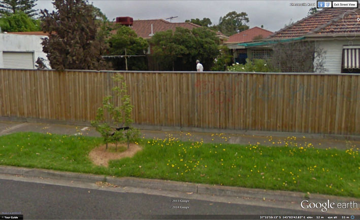
My father at home. Google Earth, Melbourne, Australia, 2011.
Unsurprisingly, Street View even sees ghosts. Inside this strange mechanism, I flick a switch and zoom in to my childhood home, which I sold recently after my parents were taken ill. I look into our former backyard and see my father there. I try to get closer but I am repelled by the absolute limits of the zoom function. Dad’s face is duly blurred but he is walking purposefully. There is no sign of the broken hip that made him reliant on a walking frame, no sign of the rapidly advancing symptoms of dementia that now afflicts him. He is frozen in time-sickness. As I advance to the next frame, his pixels are squeezed through an interlaced crack in the algorithm. I am lost between worlds, like a louse trying to find a crack of daylight in a crumpled bed sheet. Everything passes through us now: electromagnetic waves; tweets bouncing from mobile phone towers through our bodies; images of our dead and dying loved ones. The machine teaches us how to remember.

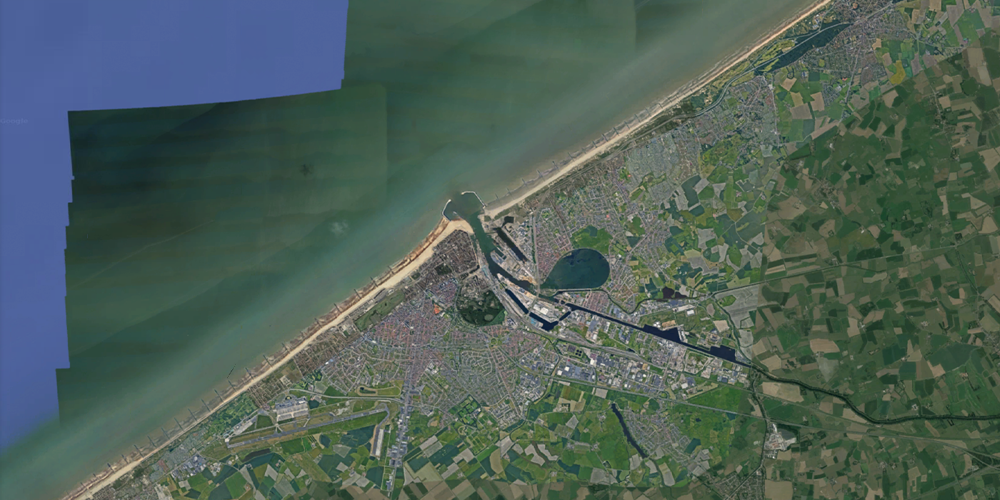
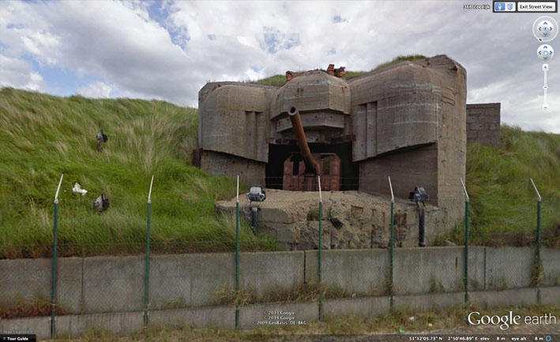 World War Two bunker (Atlantic Wall). Google Earth, Ostend, Belgium, 2009.
Accidents, robberies and moments of intense human drama sit side by side with tableaux of industrial stillness. A boy dragged down a dirt road by masked men is photographed with the same dispassionate perspective as a cow shepherded through a gate. Or a World War Two bunker overlooking a seaside road in Belgium, or a massive Zardoz-style facemask buried in the green countryside. A glitch in the imaging system – a radioactive-bomb-burst of sickly digi-yellow, overlaid in error on a field of sublime green – is rendered with the same objectivity as moments of stunning natural beauty: a golden sunrise so unreal it’s like a Martian horizon. But “Nine Eyes” is also the name given to the once-covert international surveillance arrangement, in which eight Western democracies agree to share signals intelligence with the US – not just telephonic monitoring, but, as we now all know post-Snowden, all-invasive internet spying. I watch Oslo through the Nine Eyes of Google. The NSA watches alongside me. With me. Inside me. I see the world with eighteen eyes.
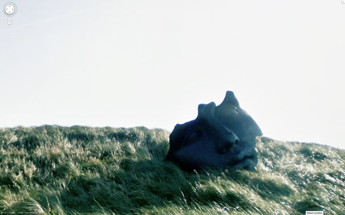
Archived image from Jon Rafman’s 9 Eyes project.
Street View cars take panoramic images of streets around the world, which, when stitched together, provide the software’s immersive digital landscape. The cars have nine camera lenses affixed to a pole on the car’s roof: the “Nine Eyes of Google Street View”, a term coined by artist
Jon Rafman. This allows the Google perspective to be truly wraparound: over, under, inside, out. Nothing escapes this 360-degree gaze. Not a startled deer running down a highway. Not a boy in full clown costume performing a hold-up. Not a grieving woman kneeling by the side of an overturned car. Not a girl sitting in the middle of a road, her possessions strewn around her. All are past or present images frozen in Street View; some remain, some now erased.
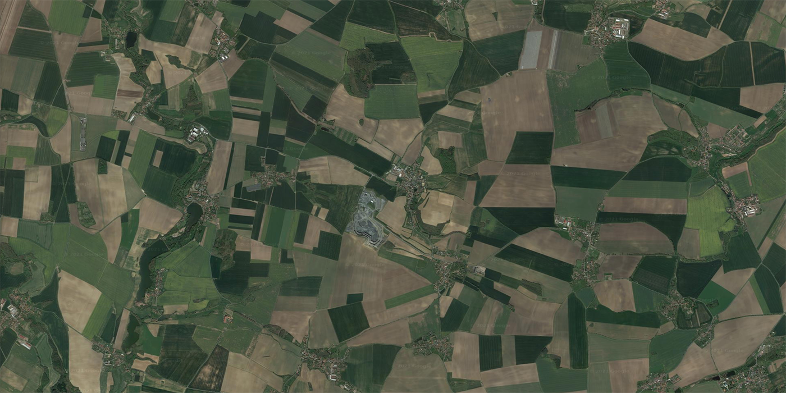
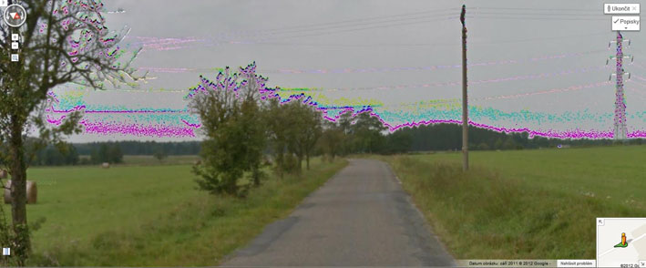
The Google camera sees everything, even that which is invisible to the naked eye. Recently, Luboš Motl, a Czech blogger, wrote about how he would feel an uncomfortable tingling in his buttocks, like many ants stinging him, when riding his bicycle under certain power lines. He noted that his bicycle seat has a hole in it, revealing exposed metal just a few centimetres away from his body.
Combined with his sweat from the bike ride, he surmised that he must have been conducting an unusually high electrical field through his body generated by the power lines. He posted screen grabs from Street View that appeared to confirm this hypothesis. The images displayed bright cyan and pink clouds following the power lines under which he rode, presumably a revelation of the supercharged electromagnetic field that had infiltrated his being with such a baffling sensation.
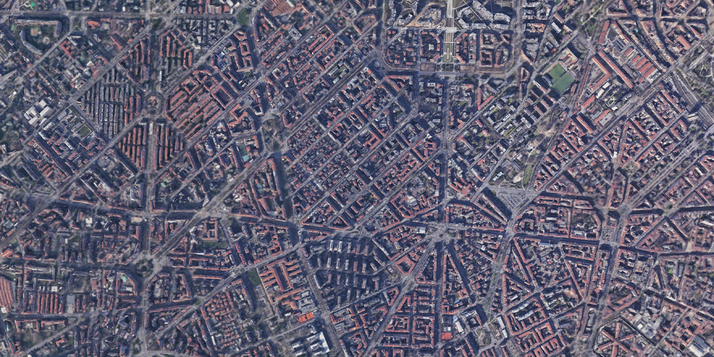
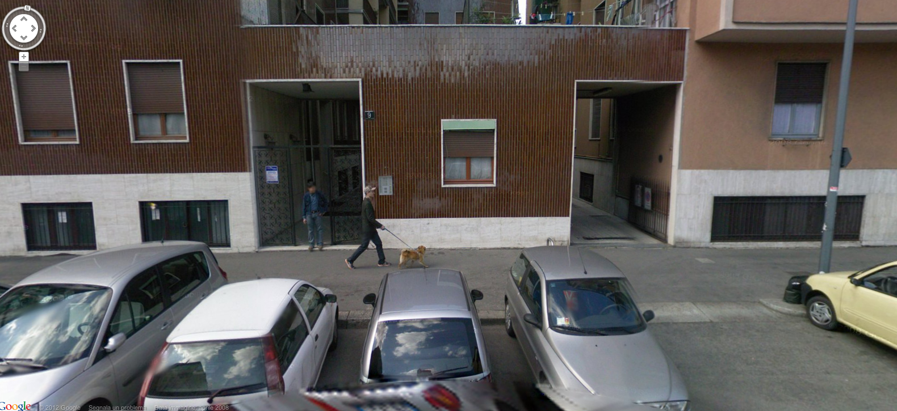
In 2008 and again in 2012, the Street View car captured artist Carlos Zanni in Milan. He converted these shots into artworks: Self-Portrait with Dog (2008) and Self-Portrait with Friends (2012), the “self-portrait” conceit giving the illusion he had control over his dual appearance on the Google stage. But, as he says, “It was just luck. I had no control.” Street View has moved on. Zanni’s website still links to the spot where he was first captured by Google, but he no longer appears: the image database has been updated. There is now just an empty pavement and a blank wall. Because of this, Zanni thinks Google is building a “time machine” that will allow us to see cities unborn. He believes Google has been saving and storing Street View layers since the project began in 2007, with the aim of eventually allowing us to traverse a particular area back in time. In the near future, a version of me will browse the Barcode Project, reducing the opacity of the various layers of time stacked on top of each other, allowing the earliest ones, the girders and steel of the unbuilt Barcode high-rises, to fade away and gradually take flesh as their blue-and-green pixelated facades slide into view.
 Los Angeles: the melting freeways of the USA. Archived image from Clement Valla’s Postcards from Google Earth.
Los Angeles: the melting freeways of the USA. Archived image from Clement Valla’s Postcards from Google Earth.